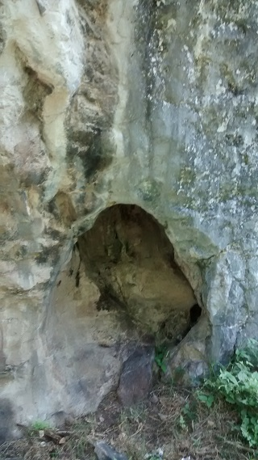
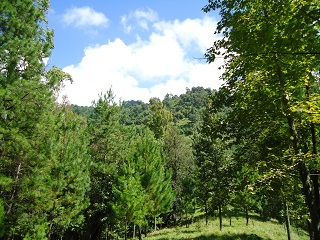
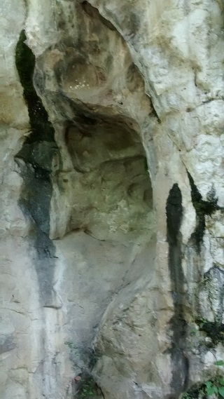
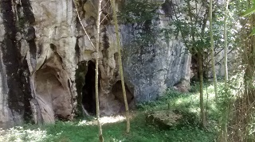
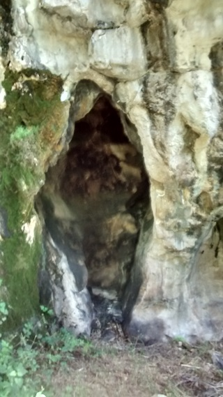

Es una formación rocosa, rodeada de árboles y arbustos en los alrededores. En el lugar se pueden observar enjambres de avispas que se encuentran hospedadas en la cueva. En los alrededores se pueden realizar juegos al aire libre, tener un picnic, entre otras actividades, como fotografía, observar los paisajes naturales.
A las afueras de pueblo nuevo Solistahuacan.
Estando en pueblo nuevo, dirigirse a la carretera federal 195 con dirección a Rayón, avanzar aproximadamente 1 km, en donde se llega a un camino de terracería, en el cual no entran vehículos, seguir el camino, pasar el puente, continuar aproximadamente 1 km y desviarse en el camino a la izquierda, continuar hasta encontrar un arroyo, y subir a la derecha, en donde se inician a ver lotes y por tanto escaleras de madera para pasar entre los campos. Se atraviesan 5 lotes, aproximadamente 1.5 km se verá el cerro en donde se encuentra la formación rocosa.
En el lugar usted puede practicar actividades como:





posicione el mouse o de click sobre las imágenes
{kind=link}
{kind=link}
{kind=link}
{kind=link}
{kind=link}